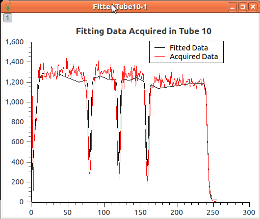

Python Code For Calibration#
The interaction with the calibration tools inside mantid is done through the tube.py file for which you can find an extensive documentation here.
Calibrate function#
Inside the python Console, all you need is to import the tube module.
import tube
Or, you may interested to import the main function calibrate directly:
from tube import calibrate
This function requires some inputs and allow for some optional parameters as well. The minimum set of parameters required are:
The workspace whose instrument is based on tubes (ws), where the counts in the tube pixels have been integrated
Definition of the set of tubes to be calibrated (tubeSet)
The position of the known points (knownPositions)
The shape of the known points (funcForm). Currently, we accept two shapes identified as 1 for Gaussian and 2 for Edges.
Parameter: Workspace#
Below, it shows an example of a workspace:
wsToCalibrate = Load('MAP14919')
wsToCalibrate = Integration(wsToCalibrate)
# you may provide the integration limits as well
#wsToCalibrate = Integration(wsToCalibrate,lowRange,highRange)
Parameter: tubeSet#
The second step is to define what are the tubes to be calibrated (tubeSet). This parameter accepts the following inputs:
As single string that defines a set of tubes (e.g.MERLIN/door2/tube_1_1), door (e.g. MAPS/A1_window), or the whole instrument (e.g. MAPS)
A list of strings (e.g. [MERLIN/door2/tube_1_1, MERLIN/door2/tube_1_2], [MERLIN/door1, MERLIN/door2])
A TubeSpec object.
from tube_spec import TubeSpec
tubeSet = TubeSpec(wsToCalibrate)
tubeSet.setTubeSpecByString("MAPS/A1_window")
Parameter: knownPositions and funcForm#
The third step is to provide the positions of the special points of the calibrated experiment along the tube. The important factor is that these positions must obey the following agreement:
The center of the tube is the origin, and the measures are given in the same measures of the 3D space (usually meters)
For example, the calibration experiment carried on MAPS instrument, you find the following data acquired on tubes as shown in the image below.
{kind=link}

There are 5 special points that can be used to the calibration. These points must be in meters The points has a rising edge, followed by 3 Gaussian through, and finally, a final edge. These 5 points were measured and the result was:
# remember that the origin is in the center of the tube. measured in meters.
knownPositions = [-0.50, -0.16, 0.0, 0.16, 0.50]
# the shape of these points: edge, Gaussian, Gaussian, Gaussian, edge
funcForm = [2, 1, 1, 1, 2]
Execution of calibrate function#
The calibrate function returns a Calibration Table that will be used to calibrate the instrument, providing, for each detector, its correct position.
calibTable = calibrate(wsToCalibrate, 'MAPS/A1_window', knownPositions, funcForm)
With the given calibration table, the ApplyCalibration algorithm is called to move those detectors.
ApplyCalibration(wsToCalibrate, calibTable)
Options#
A more extensive description of the options is found at here.
A set of optional parameters are available for the calibrate function for the sake of flexibility, to improve results.
The calibration heavily depends on the estimation of the peaks position, when this step does not perform well, the calibration provides bad results.
There are some parameters that help the calibration tool to better find the peaks, they are: fitPar and margin. margin defines a window around the peak to fit while fitPar is a TubeCalibFitParams object that keeps information of peaks center in pixels, and some other parameters that are passed to the fitting functions.
The plotTube allows to output the data acquired and fitted as workspaces for each tube. That allows the creation of plots like this
The calibTable option allow to concatenate results of sequential calibration.
The outputPeak makes the calibrate to provide the peaks table, which are the position for the peaks for each tube.
All these options are explored and used inside the examples.
Some Python scripts for analyzing the calibration#
Saving the Detector Positions to Text File#
def savePositions2TxtFileFromCalibTable(calibTable, file_path):
tofile = open(file_path,'w')
for row in calibTable:
print >> tofile, row['Detector ID'], row['Detector Position']
tofile.close()
def savePositions2TxtFileFromWorkspace( ws, file_path):
tofile = open(file_path, 'w')
det_pos = [ws.getDetector(i).getPos() for i in range(ws.getNumberHistograms()) if not ws.getDetector(i).isMonitor()]
for det in det_pos:
print >> tofile, det
tofile.close()
Loading Detector Positions From Text File#
import numpy as np
def getDetPositionsFromFile(file_path):
return np.loadtxt(file_path, delimiter=',')
Category: Calibration